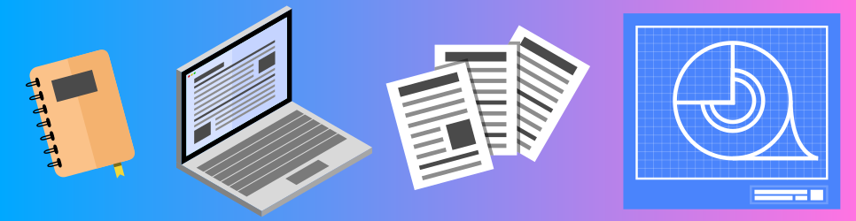
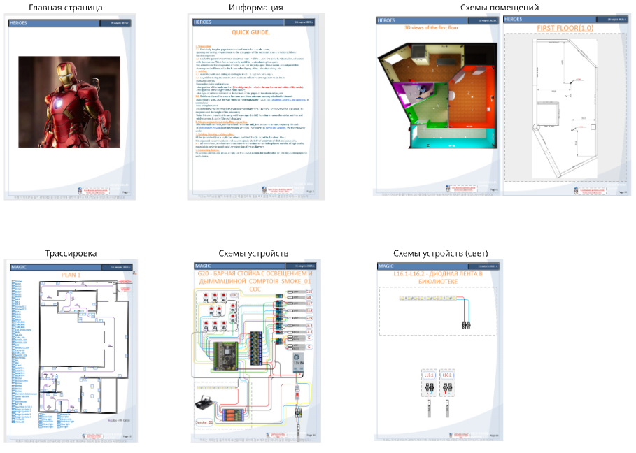
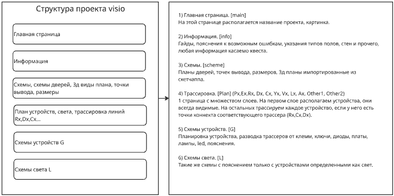
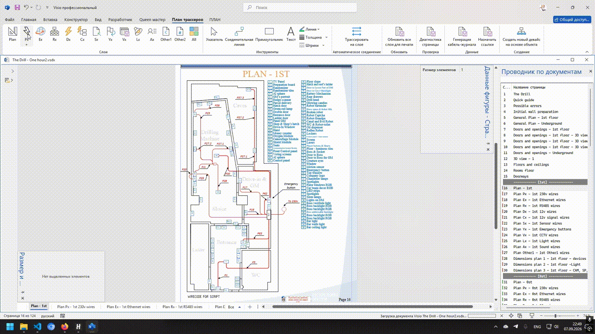
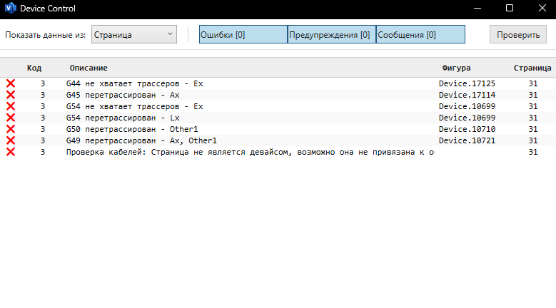
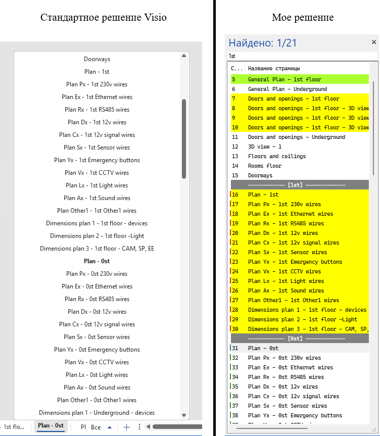
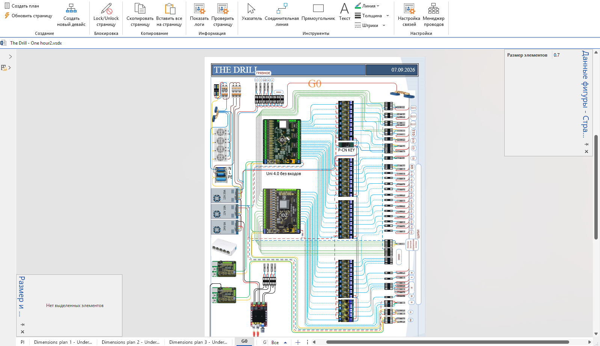

Документация
Как я стандартизировал документацию, создавал шаблоны и разрабатывал надстройку
Visio документы для заказчика были хаотичные, копировались из проекта в проект, от чего возникали ошибки накопительного характера. Большое количество ошибок при трассировке сотен проводов на плане помещений, и даже небольшой документ весил сотни мегабайт.
Visio был выбран ввиду своей способности к совместной работе (OneDrive) и отсутсвию
альтернатив. Большая проблема была в том, что каждый человек вносил свой вклад так, как ему
удобно.
Один назвал кабель по-своему, другой по-своему, затем еще один человек полночи
сидел и переименовывал кабели. Если человек удаляет страницу, а другая
страница ссылалась на нее, происходил хаос.
Я также обратил внимание, что даже небольшой документ на 20-30 страниц имел космические 100
МБ размера. Это происходило из-за того, что проект создавался копипастом предыдущего
последнего проекта, от чего ошибки в разметке накапливались с каждым документом. Еще в
памяти было очень много картинок (мастера́) которые были как бы удалены, но кеш
оставался.
Технические детали
Стандартизация
Задача состояла в том, чтобы стандартизировать документацию и убрать 80% рутинных действий. Убедить команду в новых решениях, получить разрешение на разработку. Написать макросы, сделать автоматическую проверку документации на ошибки.
Разработка решения
После небольшой презентации в Miro, я получил добро на разработку своего решения. Первым
делом я стандартизировал типы страниц, изучил все что есть, все полумеры и костыли я сразу
отмел. Получилось 5 типов страниц: информация, схемы помещений, трассировка кабеля, девайсы,
свет.
 
Типы страниц (картинка)
С помощью VSTO на C# создал приложение которое решало конкретные задачи компании.
Создал понятную структуру порядка страниц, провел несколько собраний по поводу цикла создания
документа и обучил как использовать нововедения.
Описание приложения (технические детали)
Трассировка кабеля
Документ обрел вид максимально упрощенной структуры. На страницах стало меньше тех. описания и появилось больше наглядности. Вместо того, чтобы нагружать заказчика огромной exel таблицей с сотнями проводов, я отправлял ему абстрактную схему с четко разделенными страницами по типам кабеля. Это почти идеальное решение, потому что у заказчиков на этом этапе практически никогда не было вопросов.
Это одна из самых сложных и важных частей приложения. Я
создал коды кабеля (кнопки переключения слоя) и логически их разделил по страницам: 220v
на одной странице, связь на другой и т.д. Также оставил 2 слоя как резерв. Например,
иногда нужно было обозначить откуда и куда вести HDMI кабели.
Справа - макросы. Можно автоматически массово создать соединения, сделать диагностику на
ошибки, сгенерировать кабель журнал в exel формате (иногда проффесиональным электрикам
такое куда понятнее).
Коды назначаются автоматически, появляется сноска, которая в любом случае будет указывать
на кабель.

Диагностика страниц
Вторая по важности часть приложения - диагностика. Правка отнимала наибольшее количество времени, так как приходилось вручную проверять сотни проводов на страницах. Эта часть приложения проверяла весь документ/открытую страницу на ошибки, вплоть до количества символов в названии документа.

Проводник по документам
В документе с помощью стандартного решения visio было сложно ориентироваться - все названия по центру и сам проводник в неудобном месте. Мое же решение имело на борту поиск, подсветку связанных страниц, назначение цветов типам страниц и логическое разделение между типами.

Девайсы и свет
Макросы для девайсов позволяли копировать похожие устройства из других проектов без повреждения xml разметки, как при обычном копировании (при обычном копировании, визио копирует вообще все что связано с объектами, мастера, стили. Они накладывались друг на друга). Есть возможность получить объекты кабеля с страницы мастера, чтобы не создавать их вручную.

Результат
Проверка документа сократилась с 1-3 дней до нескольких минут, ввиду автоматического назначения ID каждому проводу и алгоритму прохождения всех страниц на предмет ошибок. Благодаря использованию шаблонов вес документа снизился до 10-50 MB, тогда как в прошлом документ мог весить пару сотен MB. Также благодаря макросам получилось предоставить день в день сырой документ заказчику, чтобы он уже примерно понимал, какие конкретно провода ему нужны, сколько понадобится метров кабеля и сколько дней работ это займет, что позволяло отрабатывать правки намного раньше.